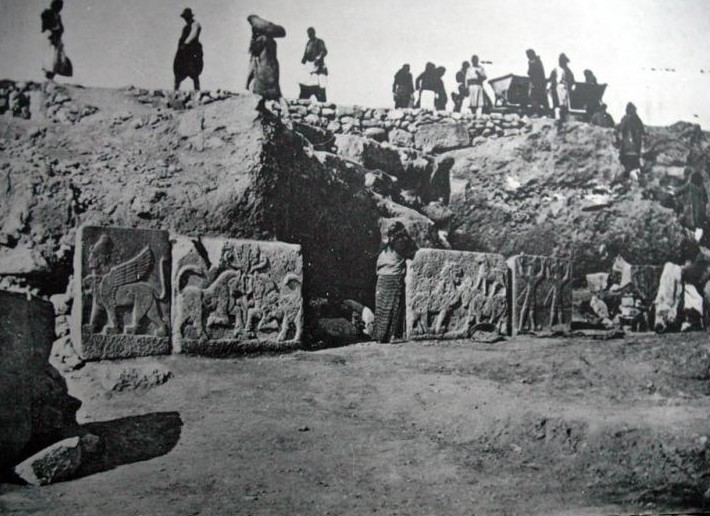

Carchemish

- Find Name
- Carchemish
- Description
- A major city on the west bank of the Euphrates at one of the chief crossings between Mesopotamia and the west, at modern Jerablus on the Turkey-Syria border. In turn an independent trading kingdom, the seat of Hittite viceroys, the capital of a Neo-Hittite state, and an Assyrian provincial centre, it guarded the route every empire travelling between Mesopotamia and the Levant had to use. George Smith identified Jerablus as Carchemish in 1876; British Museum excavations under D. G. Hogarth, C. Leonard Woolley, and T. E. Lawrence (1911-1914) exposed the citadel walls and gates, temples, and processions of Hittite reliefs and statues, and renewed Turkish work has continued in the 21st century.
- Historical Period
- Bronze Age to Neo-Assyrian, 3rd millennium to 605 BC
- Evidence Class
- Direct
- Interpretations
- Scholars agree Jerablus is biblical Carchemish; the identification, made in 1876, was confirmed by excavation. The battle itself left no single excavated battlefield layer that can be pointed to, and none is claimed — the entry is for the city whose crossing made the battle possible and whose fall Jeremiah dated.
- Alternative Names
- Karkamis; Jerablus; Charchemish
- Related Places
- Related Books
- Related Events
- Related People
- Scripture Illuminated
- Biblical Significance
- Carchemish is where the ancient world turned. In 605 BC Nebuchadnezzar of Babylon destroyed Pharaoh Necho's Egyptian army there (Jeremiah 46:2; 2 Chronicles 35:20), a victory that gave Babylon control of Syria and Palestine, Judah included, and opened the road to Jerusalem's fall. Isaiah had already listed Carchemish among the kingdoms Assyria overran (Isaiah 10:9). The Babylonian Chronicle's account of the battle matches Jeremiah's dating to the fourth year of Jehoiakim, anchoring the prophet's ministry in a dated, excavated place.
- Artifact Date
- Hittite and Neo-Hittite city; Assyrian provincial capital from 717 BC; battle of 605 BC
- Current Location
- In situ, Turkey (citadel and inner city on the Turkish side; access restricted by a military zone)
- Date Discovered
- Identified by George Smith, 1876; British Museum excavations 1878-1881 and 1911-1914 (Hogarth, Woolley, T. E. Lawrence)
- Discovery Location
- Jerablus / Karkamis, on the west bank of the Euphrates, Turkey-Syria border
- Timeline Era
- Divided Monarchy
Awaiting Review Not yet checked against scholarly sources. Treat its claims as provisional until this entry is reviewed. About verification
Last reviewed: not yet reviewed